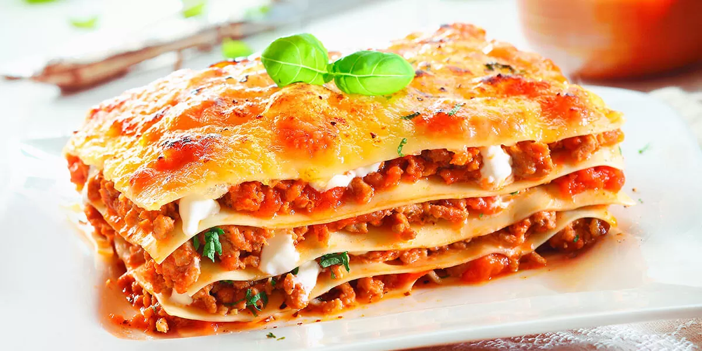
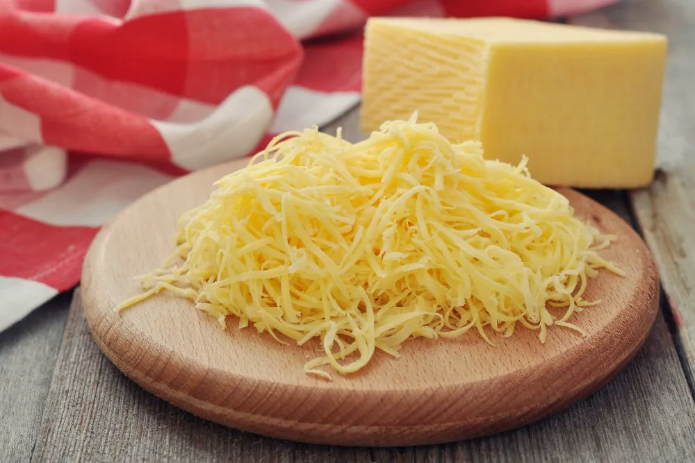
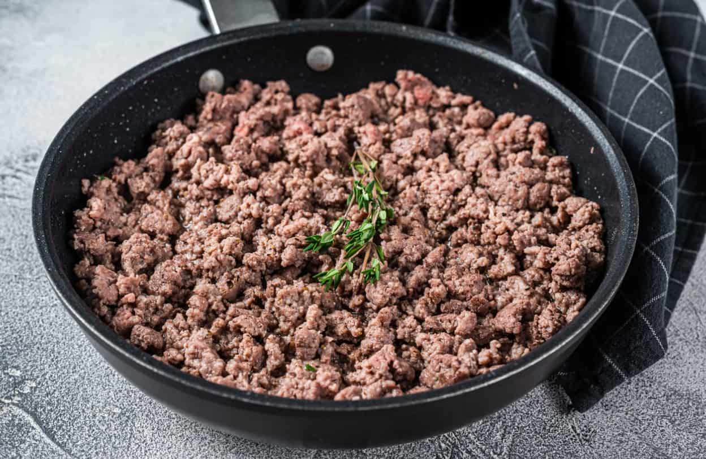

Receta para hacer lasaña

Preparación
- Carne Molida
- Cebolla blanca
- Zanahoria
- Apio
- Ajo
- Jitomate
- Hierbas
- Aceite
- Mantequilla
- Harina
- Leche
- Nuez Moscada
- Queso rayado
- Pasta


Preparación
1. Preparar salsa boloñesa
- En una olla grande, calienta el aceite de oliva y sofríe la cebolla, la zanahoria, el apio y el ajo hasta que estén suaves.
- Añade la carne molida y cocínala a fuego medio-alto hasta que cambie de color (sellada).
- Incorpora el vino tinto y deja cocinar por 2 minutos hasta que el alcohol se evapore.
- Agrega el tomate triturado, el laurel, el orégano, sal y pimienta. Reduce el fuego a bajo, tapa y deja cocinar al menos 30-40 minutos (cuanto más tiempo, mejor sabor).
2. Preparar salsa bechamel
- Derite la mantequilla en una sartén a fuego medio. Añade la harina y rehoga durante 2 minutos revolviendo con varillas para cocinar la harina.
- Añade la leche caliente poco a poco sin dejar de remover para evitar grumos.
- Cocina a fuego medio-bajo hasta que espese. Sazona con sal, pimienta y nuez moscada.
3. Montaje de la lasaña
- Precalienta el horno a 180°C-200°C.
- En una bandeja para horno, coloca una capa fina de bechamel en el fondo para que no se pegue.
- Coloca láminas de pasta.
- Extiende una capa de carne, luego una de bechamel y espolvorea queso mozzarella y parmesano.
- Repite las capas (pasta, carne, bechamel, quesos) hasta terminar los ingredientes. La última capa debe ser de bechamel y bastante queso para gratinar.
4. Horneado
- Cubre la bandeja con papel aluminio y hornea durante 20-25 minutos.
- Retira el aluminio y hornea 10-15 minutos más hasta que el queso esté dorado y burbujeante.
- Deja reposar la lasaña 10-15 minutos antes de cortarla para que las capas se asienten y no se desmorone.
¡Bon Apetit!